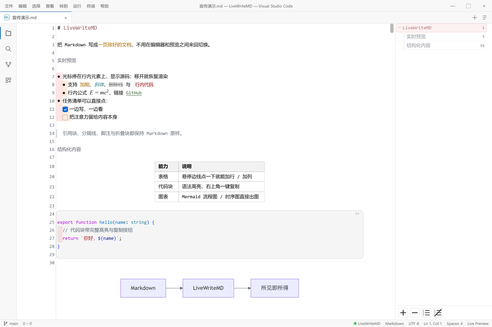

看见的是排版，改的是源码。中间没有预览页，也没有第二套滚动条。

单击渲染行展开源码，双击钉住；光标离开立刻恢复排版。标记符号只在你需要时出现。
表格、代码高亮、KaTeX、Mermaid、脚注全部直接渲染；表格把鼠标移到边线，点「+」就能加行加列。
拼音组词期间不重建装饰、不宽度跳变；彩虹缩进、续行悬挂对齐，中英文字体可以分别设置。
同一套渲染也运行在导图节点里 —— 导图不是缩略图，而是一份可编辑的文档。